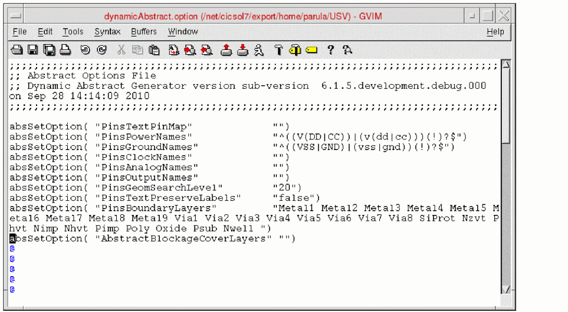

Loading and Saving an Options File for Dynamic Abstract Generation
You can load or save the options file, which is an editable text file that contains the abstraction rules used by Dynamic Abstract Generation to create abstracts.
To set the dynamicAGsFile environment variable to specify the options file that you want to load:
-
Choose Tools – Dynamic Abstract Generation for Pcells – Abstract Pcells.
By default, thedynamicAGsFileenvironment variable loads the options file nameddynamicAbstract.optionwhen the Abstract Pcells form is opened for the first time in a Virtuoso session. -
You can then change the values of the fields and click OK.
The next time when you open the Abstract Pcells form in the same Virtuoso session, thedynamicAbstract.optionfile is not loaded and the modified values, if any, are retained.
You can either read the dynamicAGsFile environment variable from the .cdsenv file or set it in the CIW. To set environment variable, in the CIW, type:
envGetVal ("layout XL" "dynamicAGsFile" 'string "dynamicAGsFile")
Here, the dynamicAGsFile is the name of the options file that is to be loaded.
You can use the following methods to load and save an options file:
- Save the abstraction rules specified in the Abstract Pcells form to an options file.To save the abstraction rules to an options file, click Save. Specify the name of the options file to which you want to save the abstraction rules in the options File Name field. You can also load an existing options file, edit it, and save the changes.
- Load the various rules contained in an options file to the Abstract Pcells form. To load the abstraction rules contained in an options file, select the required options file and click Load.
-
Directly edit an existing options file in a text editor and save the changes.
The following figure shows a sample options file.

Related Topics
Return to top